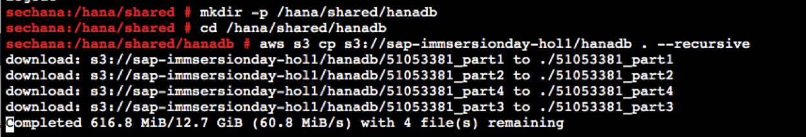
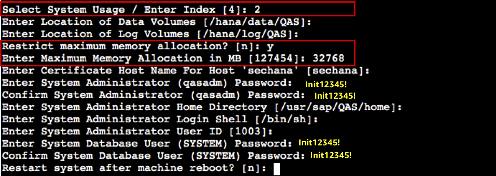
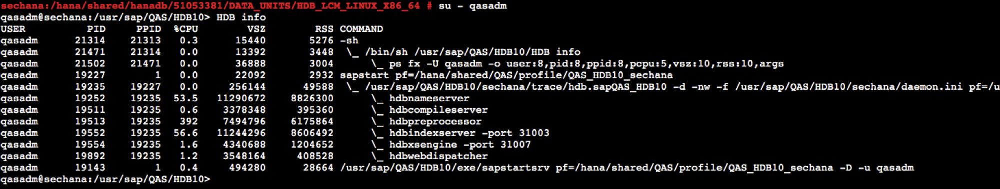

Task 02. Install SAP HANA DATABASE (QAS)
Let’s install QAS(Non-productive) SAP HANA database in sechana. In this Lab, we plan to install only for minimum functional verification. For detailed information related to the installation of HANA DB, please refer to the SAP HANA Administration Guide below.
-
Connect to sechana through Session Manager.
- Connect to EC2 Instance Console
- Select HANA-HDB-Secondary instance, click Action, and click Connect.

- Select Session Manager and click Connect.

-
Install awscli to download the HANA installation file from S3.
- Please refer to the next link for detailed installation instructions. Install the AWS CLI version 2 on Linux
- After connecting as root user, install the latest version of the AWS CLI as follows.
sudo su - cd /hana/shared curl "https://awscli.amazonaws.com/awscli-exe-linux-x86_64.zip" -o "awscliv2.zip" unzip awscliv2.zip ./aws/install- Confirm awscli installation as below
aws --version
-
After downloading HANA installation file as follows, extract it.
- Download HANA installation file from S3 URL shared in the lab guide.(e.g s3://sap-immsersionday-hol1/hanadb)
mkdir -p /hana/shared/hanadb cd /hana/shared/hanadb aws s3 cp s3://sap-immsersionday-hol1/hanadb . --recursive
- Unrar HANA installation file as follows.
unrar x 51053381_part1.exe
-
Install HANA DB
-
The main installation options are listed below.
- System ID : QAS
- Instance Number : 10
- Master Password : Init12345!
- Restrict maximum memory allocation : y
- Enter Maximum Memory Allocation in MB [63615]: 32768
-
Install HANA DB using hdblcm.
cd /hana/shared/hanadb/51053381/DATA_UNITS/HDB_LCM_LINUX_X86_64 ./hdblcm-
Enter the installation options as below.
- choose an action[install] : 2

- Select additional components for installation[server] : 2

- Use default settings for Install Path and Host Name, and enter QAS for System ID and 10 for Instance Number.

- Select 2 for System usage as test, enter 32769 MB for memory setting and Init12345! for password, and use Default setting for the rest. 
- Do you want to continue? (y/n) y

- choose an action[install] : 2
-
When the installation is complete, you can see the results below.

-
-
Check QAS HANA DB installation.
- Switch to qasadm
user and check if HDB instance is running normally.
su - qasadm HDB info
- Switch to qasadm
© 2020, Amazon Web Services, Inc. or its affiliates. All rights reserved.